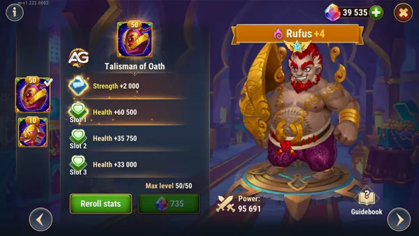
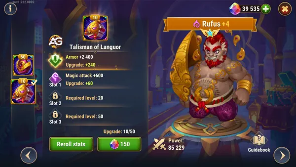
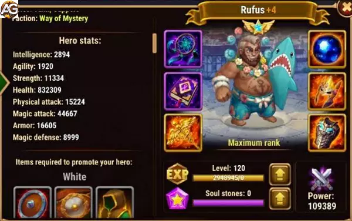

Domine batalhas mágicas com Rufus em Hero Wars Alliance! Proteja aliados com a Barreira de Rakashi, contra-ataque inimigos usando a Provocação de Rakashi e cure com o Devorador de Magia. Imortal contra magia, Rufus prospera no combate, garantindo que sua equipe domine desafios mágicos com confiança.
Ilustração de Rufus, um personagem do jogo Hero Wars Alliance, desenvolvido pela Nexters.
Estatísticas Principais de Rufus
Table: Estatísticas Principais do Rufus
Atributo
Valor
Posição
Linha de Frente
Função
Tanque, Suporte
Atributo Principal
Força
Fação
Mistério
Como Obter
Eventos, Baú Heroico, Loja da Grande Arena
Tier List Geral do Rufus
Table: Tier List Geral do Rufus 2024
Tier List 2025
Classificação
Tier List Geral:
A
Tier List da Hidra:
A+
Análise das Habilidades Reformuladas de Rufus
Rufus, após sua reformulação, recebeu mudanças significativas em suas habilidades, impactando diretamente sua eficácia no meta atual. Vamos analisar cada uma de suas habilidades e como elas funcionam agora, além de discutir as implicações dessas mudanças.
1. Barreira de Rakashi (Nível Máximo: 120)
A primeira habilidade de Rufus, Barreira de Rakashi, foi consideravelmente aprimorada. Agora, ela cria um escudo que absorve 500% do ataque mágico de Rufus, além de um valor fixo de 156.000. Isso significa que quanto maior o ataque mágico de Rufus, mais forte será o escudo. Além disso, o escudo recebe um bônus de 5% para cada aliado da facção Mistério (excluindo o próprio Rufus). Com quatro aliados da facção Mistério, o escudo pode alcançar até 520% do ataque mágico de Rufus, um valor extremamente alto.
Outra mudança importante é que o escudo agora absorve tanto dano mágico quanto dano puro. Antes da reformulação, ele absorvia apenas dano mágico. Isso torna Rufus mais versátil e útil em mais situações, especialmente contra heróis como Kayla, Keira, e Heidi que causam dano puro.
2. Escárnio de Rakashi (Nível Máximo: 120)
A segunda habilidade, Escárnio de Rakashi, também foi aprimorada. Agora, além de causar dano ao longo de 4 segundos ao inimigo com o maior ataque mágico, ela também silencia o alvo pelo mesmo período. Antes da reformulação, essa habilidade não silenciava, o que limitava sua utilidade. Com essa mudança, Rufus se torna um contra-ataque mais eficaz contra heróis baseados em magia, pois agora pode desativar suas habilidades por um período crucial.
3. Devorador de Magia (Nível Máximo: 100)
A terceira habilidade, Devorador de Magia, foi reformulada para oferecer mais utilidade ao time. Agora, ela cura Rufus e seus aliados em 30% do dano absorvido pelo escudo. Anteriormente, essa habilidade curava apenas Rufus, mas agora o efeito de cura se estende a toda a equipe. Isso faz de Rufus não apenas um tanque, mas também um curador de suporte, aumentando seu valor em composições de equipe. A cura é ativada sempre que o escudo absorve dano mágico ou puro, tornando Rufus um herói mais completo.
4. Juramento de Rakashi (Nível Máximo: 80)
A quarta habilidade, Juramento de Rakashi, passou por uma mudança significativa. Rufus agora só pode ser morto por dano físico. Se o golpe final que o atingir for de dano mágico ou puro, ele será ressuscitado com uma parte de sua vida restaurada. No entanto, esse efeito permanece ativo apenas enquanto todos os aliados que começaram a batalha com Rufus ainda estiverem vivos. Se Rufus for o último herói restante, ele não poderá mais ressuscitar. Isso representa um enfraquecimento em relação ao seu estado anterior, quando ele era completamente imortal contra dano mágico.
Antes da reformulação, Rufus era um contra-ataque direto a causadores de dano mágico como Celeste e Satori, pois eles não conseguiam derrotá-lo. Agora, esses heróis podem vencer Rufus, especialmente se ele for o último sobrevivente. Essa mudança torna Rufus mais equilibrado, mas também menos dominante em confrontos específicos.
Implicações da Reformulação
A reformulação tornou Rufus um herói mais versátil e voltado para o suporte ao time, mas também exige que os jogadores invistam mais nele para maximizar seu potencial. Anteriormente, Rufus podia ser eficaz mesmo com níveis de poder mais baixos, especialmente como um contra-ataque a times baseados em dano mágico. Agora, os jogadores precisarão fortalecê-lo consideravelmente para que ele seja viável no meta atual.
Para aqueles que já possuem um Rufus forte, a reformulação é um grande aprimoramento, pois seu escudo e habilidades de cura o tornam um ativo valioso em batalhas em equipe. No entanto, para quem tem um Rufus mais fraco, as mudanças podem parecer um enfraquecimento, já que ele não oferece mais o mesmo nível de invulnerabilidade contra dano mágico.
Impacto Geral
A reformulação de Rufus trouxe tanto melhorias quanto ajustes necessários. Ele agora está mais equilibrado e focado no trabalho em equipe, mas exigirá mais investimento por parte dos jogadores para ser efetivo. O meta pode sofrer alterações como resultado dessas mudanças, e Rufus provavelmente terá um uso mais estratégico na Arena e em outros modos de jogo. Os jogadores devem considerar aprimorar Rufus para aproveitar ao máximo suas novas habilidades e garantir que ele continue sendo um forte concorrente em suas formações.
Estratégias Eficientes para Utilizar Rufus em Hero Wars Alliance
Por que Rufus?
Rufus brilha especialmente quando confrontado com equipes que dependem fortemente de dano mágico. Sua habilidade principal, a "Barreira de Rakashi", é uma muralha impenetrável contra ataques mágicos, oferecendo uma proteção valiosa para sua equipe. Além disso, suas outras habilidades permitem que ele permaneça na linha de frente por longos períodos, bloqueando os inimigos e absorvendo o máximo de dano possível.
Substituindo Galahad e Juiz
Conforme avançamos para fases mais avançadas do jogo, é natural buscar substituições mais eficazes para os heróis iniciais. Rufus se destaca como uma escolha sólida para substituir personagens como Galahad ou Juiz em equipes voltadas para enfrentar magos. O acesso às pedras de alma de Rufus na loja da Grande Arena facilita o fortalecimento deste tanque crucial. Investir em Rufus não apenas aumenta a força da sua equipe, mas também pode economizar recursos, pois ele não exige tantos investimentos para alcançar seu potencial máximo.
Estratégias de Batalha
Ao montar sua equipe em torno de Rufus, é importante considerar a sinergia entre os heróis. Personagens que complementam suas habilidades defensivas, como curandeiros ou heróis que podem reduzir a resistência mágica dos inimigos, podem aumentar ainda mais a eficácia de Rufus. Além disso, posicionar Rufus adequadamente na formação da equipe é fundamental. Colocá-lo na linha de frente, protegido por heróis que possam fornecer cura ou buffs defensivos, maximizará sua utilidade como tanque principal.
Lidere sua Equipe Contra Magos
Rufus é uma escolha excepcional para equipes que enfrentam desafios mágicos em Hero Wars Alliance. Sua capacidade de bloquear e absorver ataques mágicos o torna um tanque valioso e confiável em qualquer batalha. Ao investir em Rufus e implementar estratégias eficazes, você pode liderar sua equipe para a vitória contra as mais difíceis adversidades mágicas que Hero Wars tem a oferecer.
Análise dos Talismãs de Rufus em Hero Wars Alliance
Rufus possui dois talismãs, cada um oferecendo benefícios distintos que atendem a diferentes estilos de jogo e composições de equipe. Aqui está uma análise detalhada de seus efeitos e qual deles pode ser mais adequado dependendo da situação.
Primeiro Talismã: Talismã do Juramento
Atributos Fornecidos: Força e Saúde
Tabela: Estatísticas do Talismã do Juramento
Slot
Estatísticas
Pontos
0
Força
+2000
1
Saúde
+60500
2
Saúde
+60500
3
Saúde
+60500
Principais Benefícios:
Este talismã aumenta significativamente o pool de saúde de Rufus. Como sua habilidade passiva Última Palavra permite que ele se torne invencível contra dano mágico ao morrer e depois ressuscite com uma porcentagem de sua saúde máxima, maior saúde se traduz diretamente em maior sobrevivência.
Rufus se torna muito mais difícil de matar, especialmente contra equipes com muitos magos, já que sua mecânica de ressurreição se beneficia da saúde adicional.
Mais saúde também significa que ele pode recuperar mais vida, garantindo que permaneça uma presença sólida na linha de frente enquanto absorve danos significativos.

Rufus com Talismã do Juramento, Hero Wars.
O Talismã do Juramento é ideal para cenários onde Rufus precisa sustentar lutas prolongadas e proteger seus aliados redirecionando dano mágico. A saúde adicional garante que sua habilidade de ressurreição tenha o máximo valor.
Segundo Talismã: Talismã da Letargia
Atributos Fornecidos: Armadura e Ataque Mágico

Rufus com Talismã da Letargia, Hero Wars.
Principais Benefícios:
A armadura adicional melhora a resiliência de Rufus contra dano físico, tornando-o um tanque mais equilibrado. No entanto, isso reduz indiretamente o ganho de energia, já que sofrer menos dano de ataques físicos significa que ele gera energia mais lentamente.
A melhoria no ataque mágico aumenta as habilidades protetoras de Rufus, especialmente seus escudos, permitindo que ele defenda melhor os aliados contra dano mágico.
Embora o Talismã da Letargia torne Rufus mais resistente e melhor na mitigação de dano físico, seu efeito no ganho de energia pode limitar a frequência de suas habilidades de escudo, que são cruciais para proteger aliados.
Qual Talismã é Melhor para Rufus?
Na maioria dos cenários, o Talismã do Juramento se destaca como a melhor escolha para Rufus. Aqui está o porquê:
Melhor sinergia com Última Palavra: Saúde mais alta aumenta o potencial de ressurreição de Rufus, tornando-o mais eficaz contra equipes focadas em dano mágico.
Ganho de energia mais rápido: Sofrer mais dano de ataques físicos devido à falta de armadura aumenta o ganho de energia, permitindo que Rufus ative seus escudos com mais frequência.
Suporte consistente: Rufus pode continuar fornecendo proteção confiável para sua equipe, mesmo após reviver.
O Talismã da Letargia, embora útil para melhorar a resistência de Rufus e a potência de seus escudos, pode limitar situacionalmente seu ganho de energia, reduzindo sua utilidade em batalhas rápidas. No entanto, pode ser vantajoso em combates onde a equipe inimiga causa danos físicos significativos.
Para a maioria dos jogadores, o Talismã do Juramento oferece uma opção mais equilibrada e impactante para Rufus, pois amplifica suas forças na mitigação de dano mágico e ressurreição. O Talismã da Letargia, embora ofereça utilidade defensiva, é mais adequado para composições de equipe e estratégias específicas que exijam uma linha de frente durável contra dano físico.
Pontos Positivos e Negativos do Rufus
Pontos Positivos
Proteger aliados com a barreira Rakashi absorvendo dano mágico
Invencível contra dano mágico e dano puro
Tanque Resistente contra times de magos
Recupera parte da vida
Causa dano puro
Pontos Negativos
Fraco contra times de dano físico
O ressuscitar não funciona contra a Morrigan
O escudo Rakashi só absorve dano mágico
Prioridades de Evolução do Rufus
Glifos
Glifos
Prioridade
Tipo
1
Vida
2
Força
3
Ataque mágico
4
Armadura
5
Defesa Mágica
Artefatos
Artefatos
Prioridade
Tipo
1
Livro
2
Anel
3
Arma (armadura)
Visuais
Visuais
Prioridade
Tipo
1
Vida
2
Vida
3
Força
4
Ataque Mágico
5
Armadura
6
Dureza

Rufus com visual de verão, Hero Wars Mobile.
Rufus vs Hidras
Rufus é um grande herói contra as hidras de dano mágico, ajudando seu time absorvendo danos mágicos com barreira Rakashi.
Equipe de Rufus para Hidras Mágica: Martha. Mojo, Nebula, Jhu, Rufus
Rufus em Batalhas
Forte Contra
Satori, Celeste, Xe`sha, Iris, Amira, Lian, Gêmeos, Orion, Mojo, Sem Rosto, Maya, Cleaver, Corvus, (e todos os heróis de ataque mágico e dano puro)
Counters
Morrigan, Galahad, Chabba, (e Todos os heróis de ataque físico e crtico)
Guia dos Melhores Times de Rufus
Rufus é um herói versátil em Hero Wars, capaz de formar equipes fortes com várias combinações de heróis. Abaixo estão algumas das melhores composições de equipe apresentando Rufus:
Rufus, Julius, Juiz, Isaac, Astrid Lucas
Esta composição de equipe oferece um equilíbrio entre resistência, dano e suporte. Julius e Juiz fornecem presença adicional na linha de frente, enquanto Isaac e Astrid Lucas contribuem com dano e controle de multidão.
Rufus, Julius, Satori, Juiz, Amira
Incorporar Satori na formação para atacar equipes inimigas com seu alto dano mágico, enquanto Amira reduz o ataque mágico deles e fornece resistência mágica e buffs para manter a equipe sustentada.
Rufus, Andvari, Keira, Sebastian, Jet
Esta formação se concentra em alta produção de dano com Keira e Jet, enquanto Andvari fornece proteção e Sebastian aumenta a Chance de Acerto Crítico.
Rufus, Satori, Jorgen, Faceless, Martha
Com esta equipe, o ataque mágico de Satori combinado com a manipulação de energia de Jorgen e a habilidade de Faceless de copiar as habilidades inimigas podem desestabilizar formações inimigas de forma eficaz.
Estes são apenas alguns exemplos das muitas equipes poderosas das quais Rufus pode fazer parte. Experimente diferentes combinações para encontrar a sinergia que melhor se adapta ao seu estilo de jogo e contra os oponentes que você enfrenta em Hero Wars.
Desbravando as Batalhas Mágicas: Guia das Habilidades de Rufus em Hero Wars Alliance
A Formidável Barreira de Rakashi
Rufus é o mestre indiscutível em defesa contra ataques mágicos. Sua habilidade primordial, a "Barreira de Rakashi", envolve toda a equipe com um escudo impenetrável, absorvendo todo o dano mágico lançado contra eles. Com uma capacidade de escudo que cresce com o nível de habilidade, Rufus pode enfrentar até os ataques mais devastadores com confiança, tornando-se uma muralha intransponível contra equipes de dano mágico pesado.
O Desafio Persistente com Zombaria de Rakashi
Além de sua defesa sólida, Rufus também é capaz de contra-atacar com sua habilidade "Zombaria de Rakashi". Esta habilidade não apenas inflige dano ao longo do tempo ao inimigo com o maior ataque mágico, mas também adiciona pressão constante sobre os adversários, desestabilizando sua estratégia e permitindo que sua equipe mantenha o controle do campo de batalha.
A Vital Recuperação com Devorador de Magia
Uma das características mais úteis de Rufus é sua habilidade "Devorador de Magia". Esta habilidade converte parte do dano absorvido pela Barreira de Rakashi em saúde para Rufus, permitindo que ele se recupere e permaneça na linha de frente por mais tempo. Essa capacidade de auto-sustentação é crucial em batalhas prolongadas, onde Rufus pode continuar a proteger sua equipe enquanto mantém sua própria saúde.
O Juramento de Rakashi: Resistência Imortal
Finalmente, Rufus é abençoado com o "Juramento de Rakashi", tornando-o praticamente imortal contra dano mágico e dano puro. Agora, apenas o dano físico pode ameaçar sua vida, e mesmo assim, ele tem a chance de ressurgir, restaurando parte de sua saúde. Esta habilidade não apenas aumenta a durabilidade de Rufus, mas também confunde os inimigos, obrigando-os a ajustar suas estratégias para enfrentar um adversário aparentemente invencível.
Conclusão do Guia do Rufus o Mestre do Combate Mágico
Em resumo, Rufus é verdadeiramente o mestre indiscutível do combate mágico em Hero Wars Alliance. Sua habilidade em absorver, contra-atacar e se regenerar torna-o um ativo inestimável em qualquer equipe que enfrente desafios mágicos. Ao investir em Rufus e implementar estratégias eficazes que aproveitem ao máximo suas habilidades únicas, você pode liderar sua equipe para a vitória em batalhas contra os mais poderosos magos de Hero Wars. Prepare-se para desbravar os campos de batalha mágicos com Rufus ao seu lado, e triunfe sobre seus adversários com confiança e determinação.
Sugestões de Vídeo:
Vídeo: Como upar Rufus em Hero Wars.
Deixe Sua Opinião!
Você gostou das nossas dicas do Guia do Rufus? Há algo que não entendeu ou gostaria de sugerir mudanças? Convidamos você a se juntar à nossa sessão de comentários na página do Alexandre Games Blog. Não hesite em expressar sua opinião, clarificar suas dúvidas e compartilhar sua sugestões. Clique no botão abaixo para começar:

 Celeste
Celeste Cornelius
Cornelius